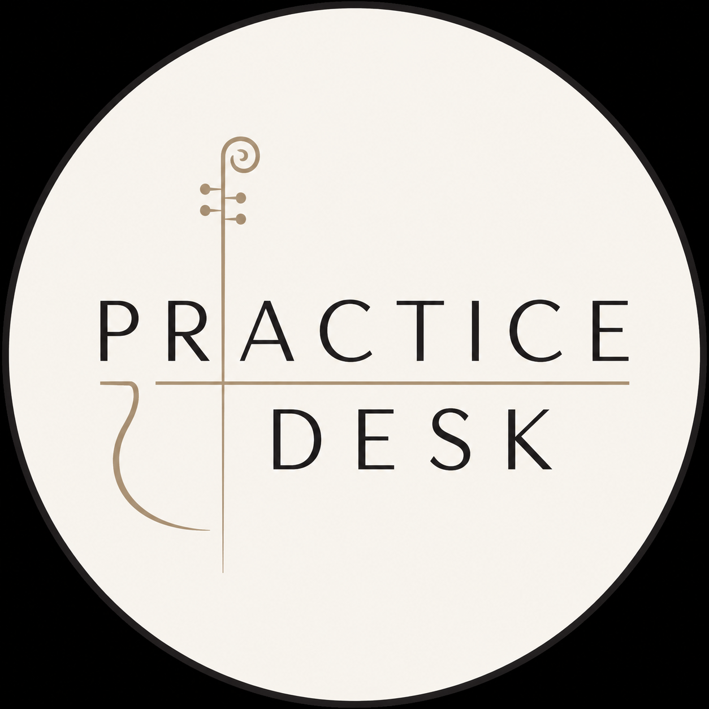

Practise with direction.
Send your playing and receive detailed, personalised feedback, clear priorities and a practical plan for what to work on next.
Created and run by Anna Crawford, professional orchestral cellist and Royal College of Music graduate.
Submit your playingA professional second opinion, in three simple steps.
Record
Record up to 10 minutes of your cello playing on your phone or camera. It doesn't need to be a perfect take — send the playing you actually want help with.
Submit
Send your recording and tell me what you're working towards, what you're unsure about, or what you'd particularly like another professional pair of ears on.
Receive
Within 5 days, you'll receive a personalised written Practice Report with detailed feedback, clear priorities and practical next steps.
Not just comments. A plan.
Know what is working, what needs attention, and where your practice time will make the biggest difference.
Your review is built around the recording you send and what you want help with. Rather than forcing every player through the same checklist, I'll focus on the things that matter most in your playing right now.
- Overall performance assessment
- Technique, sound and intonation feedback
- Musical and stylistic observations
- 3–5 prioritised areas to work on
- Specific practice suggestions and exercises
- A personalised practice plan
- Clear goals for your next recording
Sometimes you just want another pair of ears.
Practice Desk isn't designed to replace a regular teacher. It's a way to get focused, independent feedback when you want a fresh perspective on your playing — without needing to arrange another lesson.
You might be preparing for an audition, exam or performance, working through a technical problem, returning to the cello after time away, or simply wondering whether you're focusing on the right things in the practice room.
Send your playing. Know what to work on next.
Submit up to 10 minutes of playing and receive your personalised Practice Report within 5 days.
Tell me what you're working towards or what you most want help with, and I'll make that part of the review.
One recording · up to 10 minutes
Personalised written report
Practice priorities + next steps
Delivered within 5 days
Hi, I'm Anna.
I'm a professional orchestral cellist and the founder of Practice Desk.
I trained at the Royal College of Music and now work professionally as an orchestral cellist in the UK.
I created Practice Desk because sometimes what you need isn't another full lesson. You need someone new to listen carefully to your playing, tell you what they're hearing, and help you work out what to prioritise next.
Recording also means you can play when it suits you, choose what you genuinely want feedback on, and return to your report throughout your practice rather than trying to remember everything from a lesson.
Good to know.
Do I need to be an advanced cellist?
Not at all. Practice Desk is for cellists at a wide range of levels. You might be returning to the instrument, preparing for an exam, audition or performance, or simply looking for some professional direction in your practice. Your feedback is tailored to your playing and what you want to achieve.
What can I submit?
Solo repertoire, orchestral excerpts, audition material, exam pieces or passages you're currently working on. Your recording can be up to 10 minutes long.
Why choose this instead of a live lesson?
Practice Desk isn't intended to replace live teaching. Think of it as a professional second opinion: a chance to have your playing assessed independently and receive a written set of priorities you can keep, revisit and work through at your own pace.
Can I use Practice Desk alongside my regular teacher?
Absolutely. A Practice Report can be a focused check-in or fresh perspective alongside your regular lessons.
Do I have to play live?
No. You record in your own time and submit the playing you want feedback on. There's no live video call or need to perform on demand.
Will my video be shared publicly?
No. Your submission is used for your assessment only unless you separately give explicit permission for another use.
How quickly will I receive my report?
You'll receive your personalised Practice Report within 5 days of a complete submission.